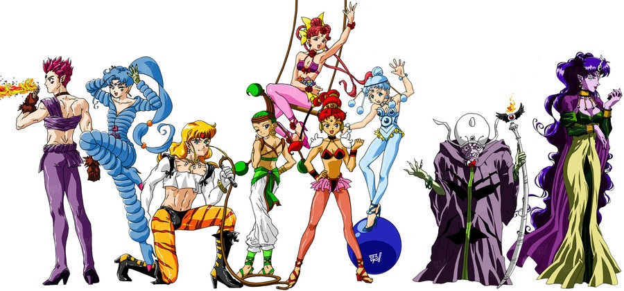
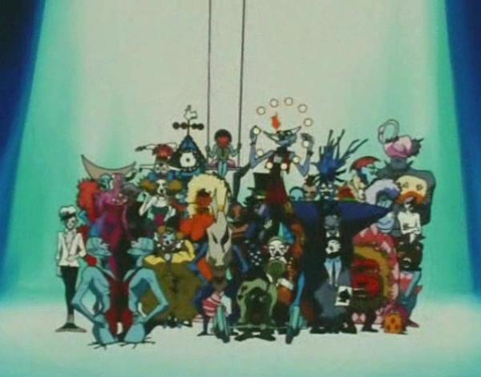
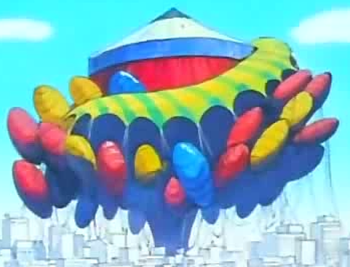
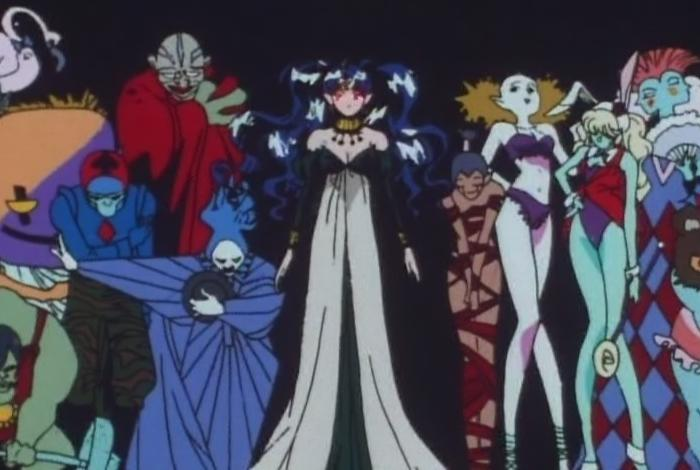

The Dark Moon Circus is the circus of the Dark Moon, run by Zirconia and Queen Nehelenia.
Nehelenia's subjects all became Remless when she became obsessed with eternal youth
and beauty. When she was imprisoned in a mirror, she sent Zirconia, created from her
fear of becoming ugly. The Dark Moon Circus invaded Elysion, Helios's dream world, to
get the golden crystal, but Helios became Pegasus and entered Rini's dreams after he
was imprisoned in Nehelenia's mirror.

The Dark Moon Circus then arrived on Earth at a solar eclipse to find out
whose dreams Pegasus was hiding in, so they could capture him and take the golden
crystal. First the Amazon Trio looked for Pegasus, but couldn't find him. They
eventually turned good, were given dream mirrors by Pegasus, and taken to Elysion.
The Amazon Quartet took over from here. Eventually they turned good as well,
destroying the orbs Nehelenia gave them so Zirconia couldn't take power from them
anymore.

All the Remless were destroyed, and Zirconia was destroyed as well when
Nehelenia escaped her mirror. She fought the Sailor Scouts, and was defeated by
Sailor Moon and Sailor Mini Moon, destroying all the circus tents except the main
one, which eventually disintegrated after Nehelenia returned to her mirror.
Members

Zirconia (manager)
Queen Nehelenia (supreme ruler)
Tiger's Eye (one of the Amazon Trio)
Hawk's Eye (one of the Amazon Trio)
Fish Eye (one of the Amazon Trio)
Besu Besu (one of the Amazon Quartet, and animal trainer)
Cele Cele (one of the Amazon Quartet, flower magician and trapeze artist)
Jun Jun (one of the Amazon Quartet, and acrobat)
Para Para (one of the Amazon Quartet, and ball rider)